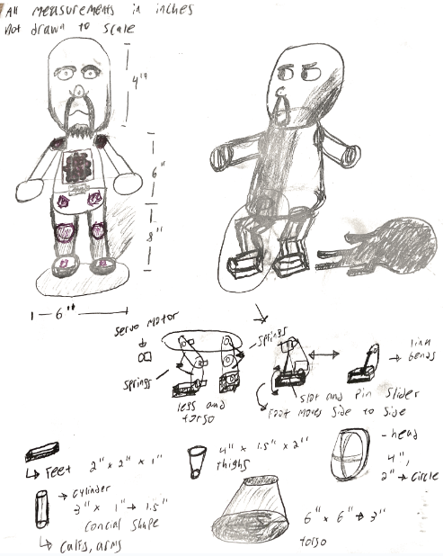
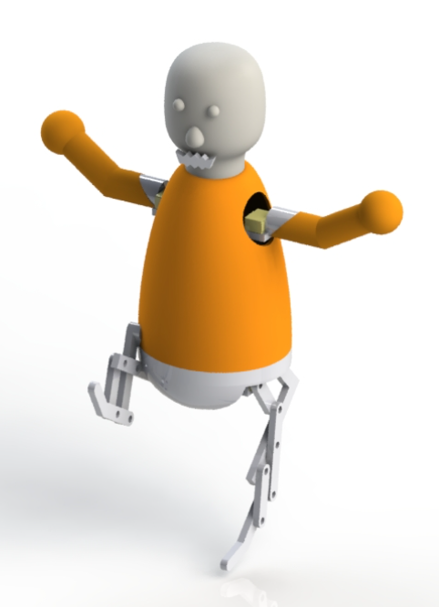
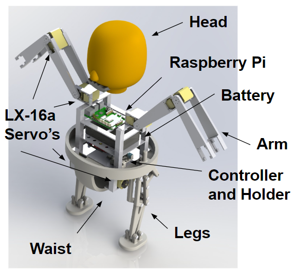
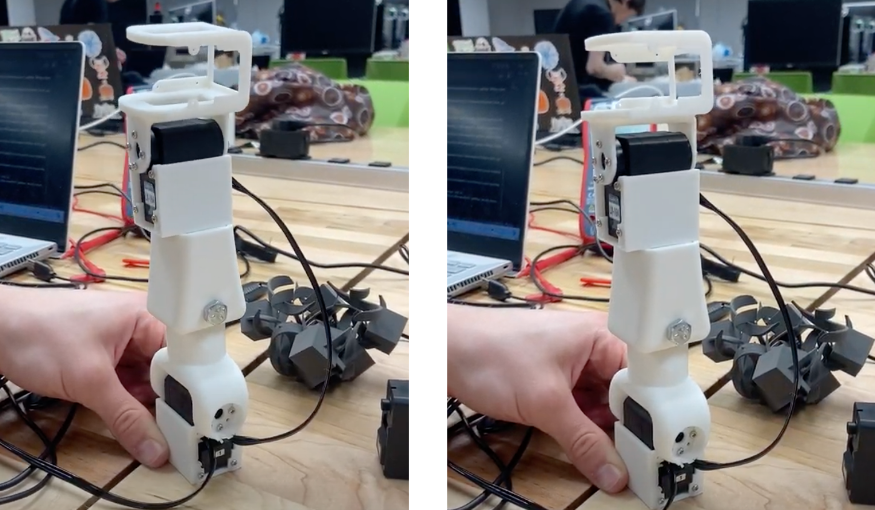
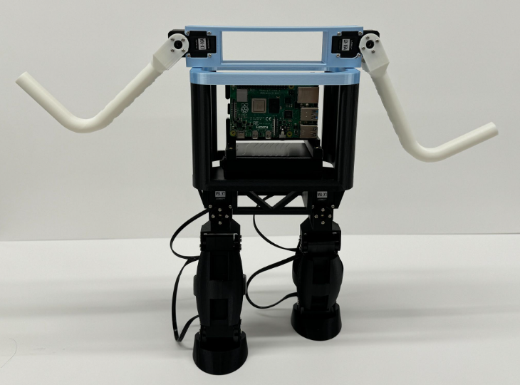
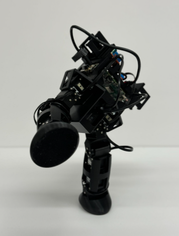
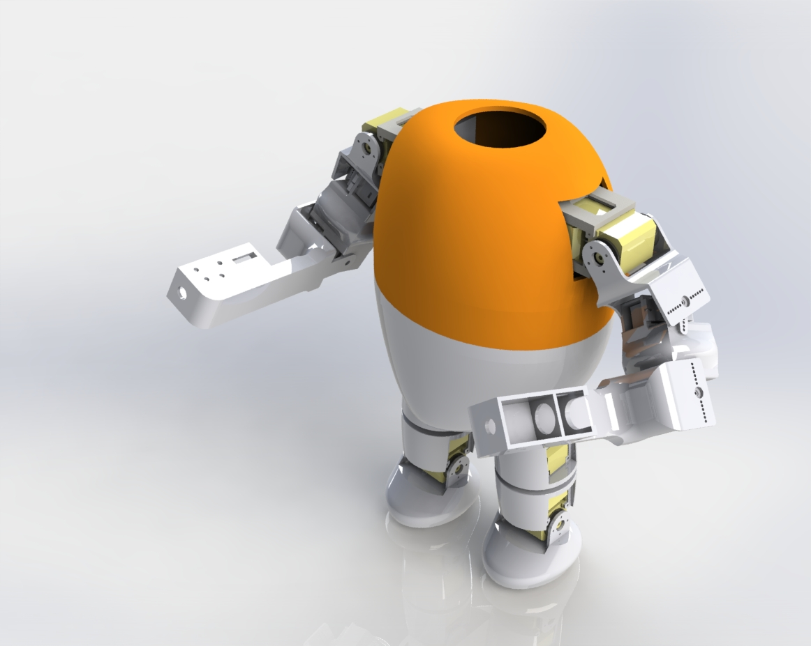

Initial Sketches
These were the initial sketches of how the robot was intended to look. It is based off of the boxer from Wii Sports.

First CAD Model
This was the first iteration of the CAD model of this project. It does not include all of the components just the general shape and size of the robot.

Exploded View of CAD
Here you can see each of the individual components of the robot. The Raspberry Pi, DC to DC converter, servo motors, battery, and PLA parts are included.

First Leg Movement
This photo shows the first test we ran to get our servo motors working. It doesn't look strictly like a leg, because we were testing various designs to see which could hold the servo motors the best.

Fully Built Version 1
This was the first fully built version of our robot. It did not have the punching feature yet, but it had all the parts necessary to walk.

Walking Robot
This is a photo of one of the intermediate positions for our walking robot. Here is an accompanying video for the walking of the robot:


Final CAD with Punching
This is the final CAD model for this project. It has 10 servo motors, 2 solenoids, and a Raspberry Pi as the brains of the project. It has not been printed yet.

PyBullet Machine Learning
The reason the above CAD has not been printed is because the model needs to learn to walk. So, I imported the model into PyBullet, which uses a URDF file of the robot to simulate it in a flat environment. The GIF shown here is a random sort trying to find the combination of parameters for the robot's servo motors that allow it to walk the farthest without falling over.